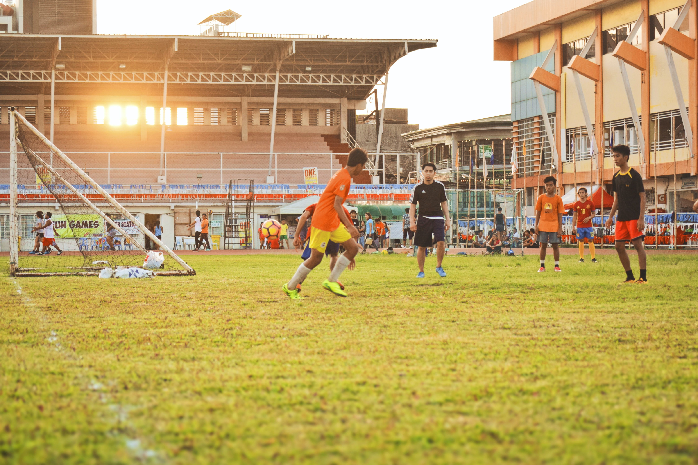

PHOTO GALLARY OF COLLEGE
OUR COLLEGE CAMPUS
GITAMATA College encourages students from all faith backgrounds to find their God-designed potential for leadership, scholarship and service.
At COLLEGE, students develop spiritual and professional gifts; find professors who care for and respect the individual; and seize opportunities to create, learn and connect.
In the comfortable campus atmosphere, professors not graduate students teach classes.
Students choose from more than 50 undergraduate majors, minors and emphases in 27 fields of study including a personalized degree and a Master of Physician Assistant Studies.
Union’s newest academic option, international rescue and relief, is the only bachelor’s program of its kind in the United States.
This high-energy major prepares students for careers of humanitarian service or disaster response around the world.

PLAY GROUND
The college presently have it’s own lush green playground, where regular sports & games such as volleyball, football and cricket etc are conducted time to time.
We have facility for indoor games such as chess, badminton, Table Tennis and Snooker.
Why is playing important?
Play is so essential for child development around the world that the United Nations High Commission for Human Rights recognizes it as a right of every child. Play is critical for kids to develop the emotional, social and creative thinking skills they’ll need when they’re adults.
Play allows them to engage with their surrounding environment and with others in their community in a fun context.
It enables them to explore ideas and different ways to behave, testing their boundaries and growing in the process.

LIBRARY
The importance of school library can not be over emphasized.
A library is an important source of knowledge to young minds in schools.
It develops the important habit of reading among the students. Every school should have a library.
The school library plays a great role in the life of students by serving as the store house of knowledge.
The importance of a library in a school cannot be over emphasized.
While the role of the school library remains constant, its design, digital platform, strategies and tools could change as technology changes.
School libraries help to:
1. Impact positively on the academic achievement of the students. Students can perform better during examination by reading various books.
Recommended:8 Tips to Effectively Prepare for Exam.
2. Facilitate the work of the classroom teacher and ensures each student has equitable access to resources, irrespective of home opportunities or constraints.

CLASSROOMS
Classroom environment is one of the most important factors affecting student learning.
Simply put, students learn better when they view the learning environment as positive and supportive .
A positive environment is one in which students feel a sense of belonging, trust others, and feel encouraged to tackle challenges, take risks, and ask questions).
Such an environment provides relevant content, clear learning goals and feedback, opportunities to build social skills, and strategies to help students succeed
"Creating a caring, child-centered environment takes lots of thought and planning," says fifth-grade teacher Frank Garcia.
"Basic bulletin boards are not enough. I believe in a very colorful classroom with posters, functional bulletin boards, and
other 'interesting' items to enhance the environment, such as a small refrigerator, TV, and a stereo system with a CD player."